BLEND 01 · 한라봉
귤빛 새벽
감귤 녹차
싱그러운 귤향으로 시작해, 녹차의 산뜻함으로 마무리.
제주 녹차 · 한라봉 · 감귤피
- 첫 향
- 한라봉을 닮은 밝은 감귤향
- 맛
- 가볍고 산뜻한 녹차 맛
- 여운
- 입안에 은은하게 남는 귤향
이런 취향이라면
과일향이 있는 가벼운 차가 좋아요.
픽티북 · 블렌딩 티백 세트
다섯 가지 차를 만나고,
좋아하는 맛을 발견하는 시간.
핑티와 함께 나만의 찻장을 채워보세요.
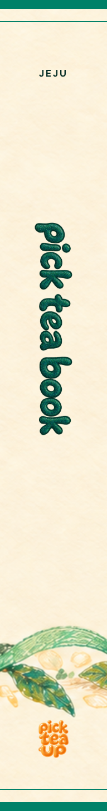
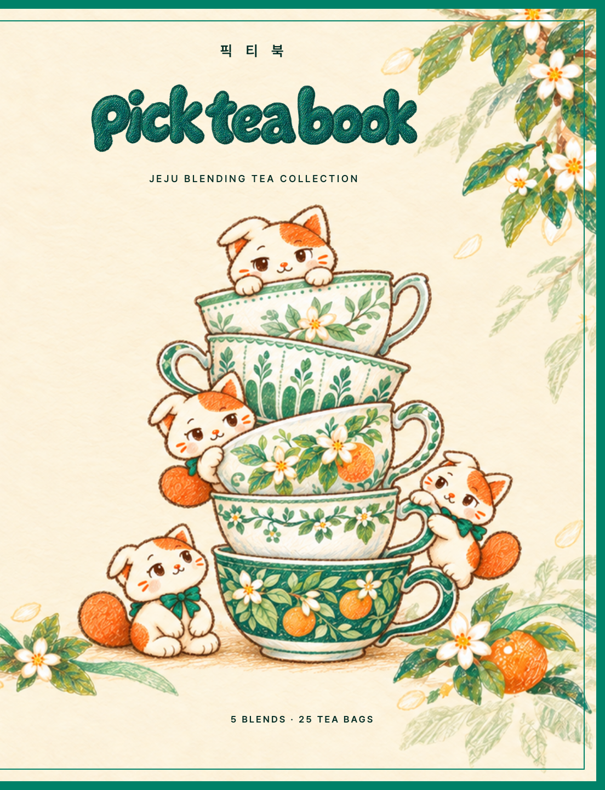
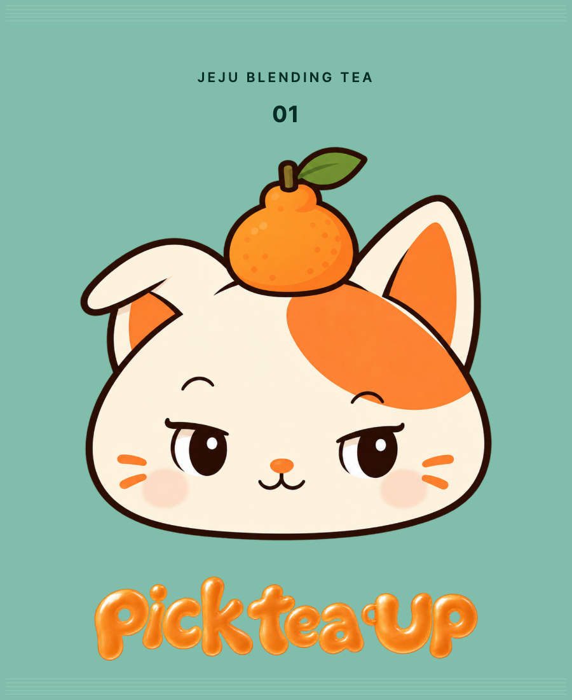
A LITTLE BOOK OF TEA & YOUYOUR FIRST TEA STORY
향이 좋았는지, 어떤 기분이 들었는지.
어려운 말 대신 내가 느낀 것부터 시작해요.
픽티북은 그 작은 발견을 한 권에 모읍니다.
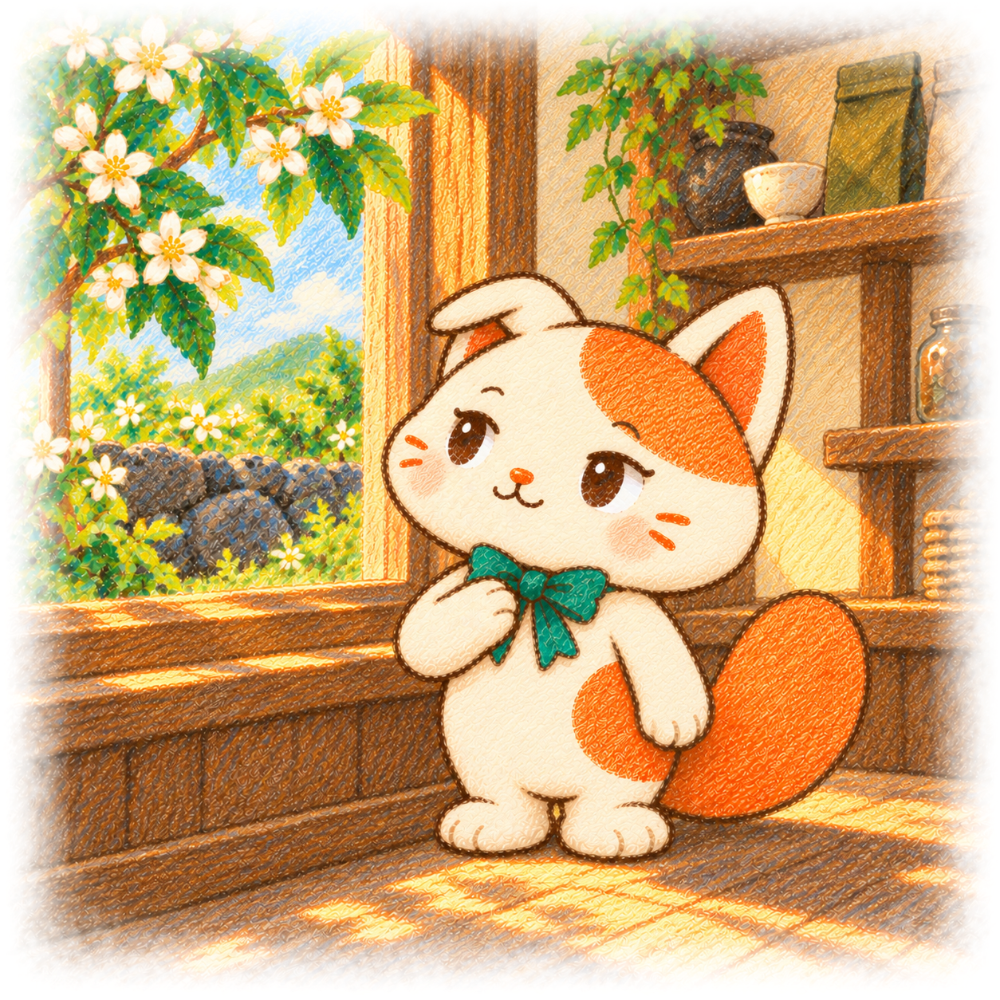
“내가 좋아하는 건 말할 수 있어!”
핑티의 제주 이야기 중에서
A TEA BOOK TO KEEP
앞면의 다정한 그림, 책등의 이름,
뒷면에 담긴 나의 차 이야기.
종이 지함의 모습을 천천히 살펴보세요.
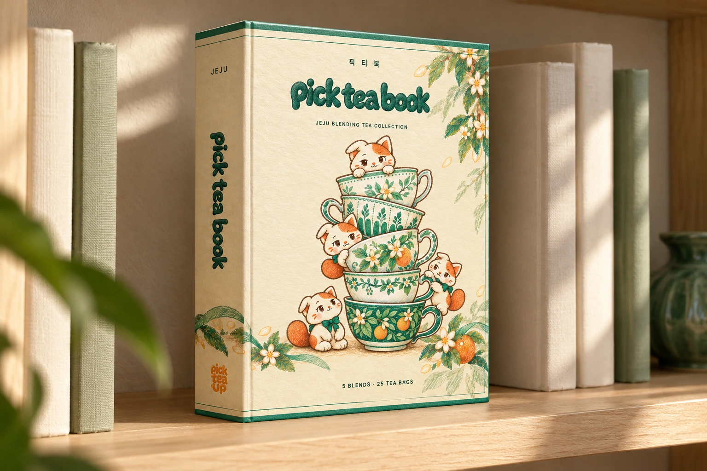
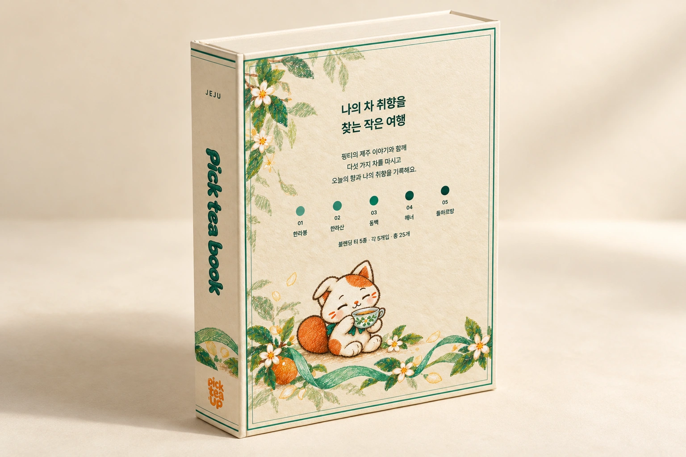
OPEN YOUR LITTLE TEA CABINET
한쪽에는 읽고 기록하는 작은 책.
다른 쪽에는 오늘의 차를 고르는 다섯 빛깔의 봉투.
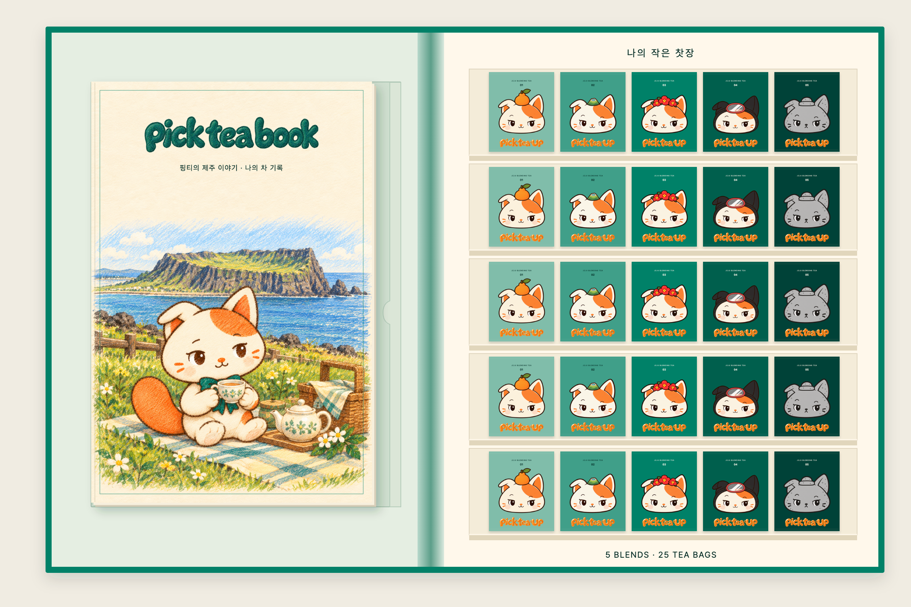
LEFT · 읽고, 기록하기
제주에서 시작된 동화를 읽고,
차 그림일기에 내 이야기를 이어가요.
RIGHT · 고르고, 맛보기
마음이 가는 봉투 하나를 고르고,
한 잔씩 천천히 만나보세요.
01
오늘 마음이 가는 차 한 봉투.
02
차와 함께 펼치는 핑티의 이야기.
03
나만의 말과 그림으로 쌓는 취향.
ONE TEA BAG, YOUR TEA MOMENT
핑티와 함께 나만의 찻장을 채워나가요.
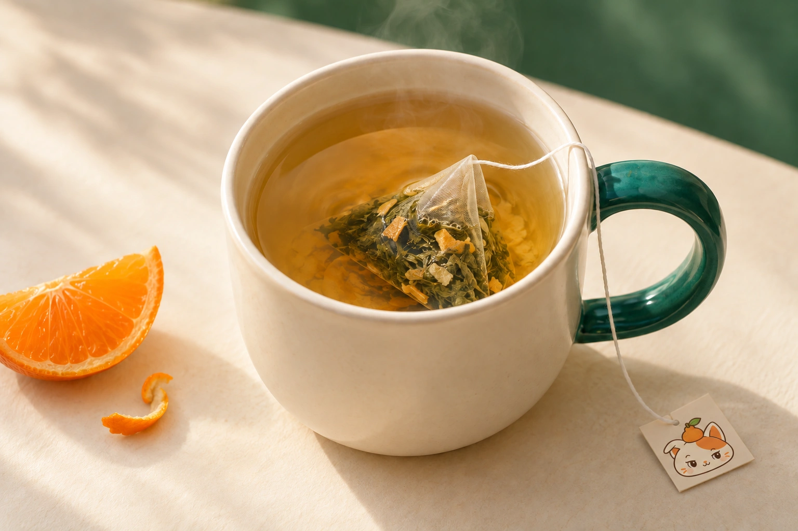
FIVE BLENDS, FIVE JEJU MOTIFS
싱그러운 감귤향, 맑은 녹차, 은은한 꽃향,
익숙한 곡물의 고소함과 깊은 홍차의 여운.
다섯 가지 맛에서 내 취향을 찾아보세요.
BLEND 01
티백 5개
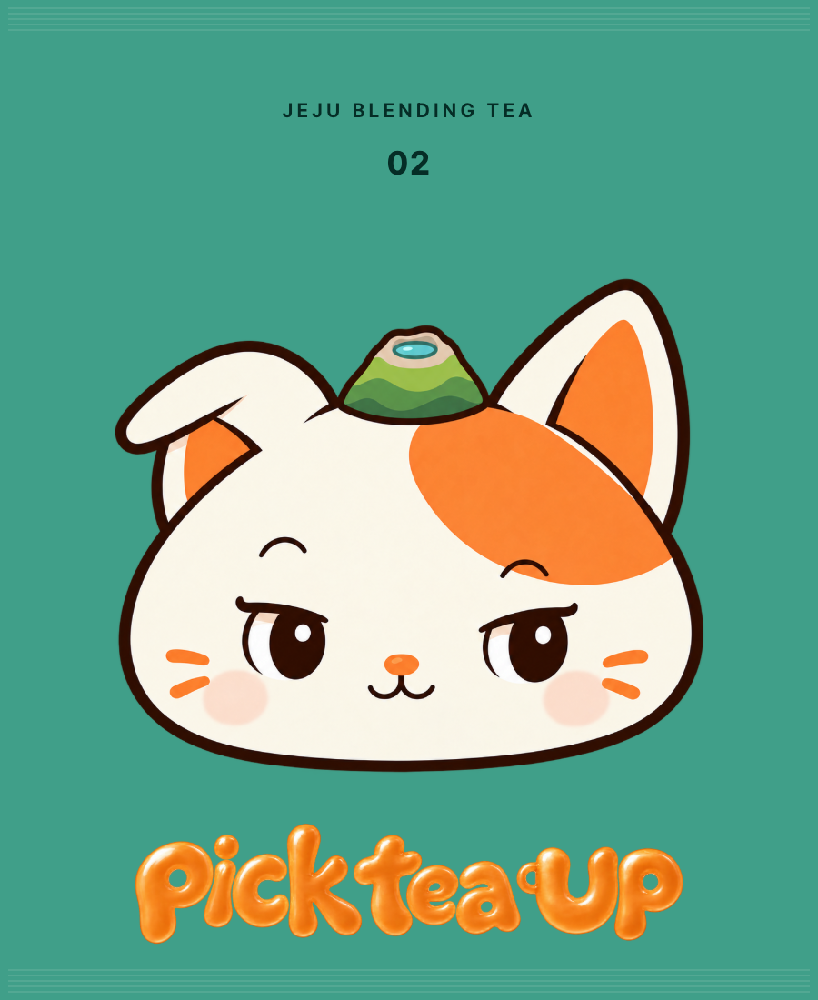
BLEND 02
티백 5개
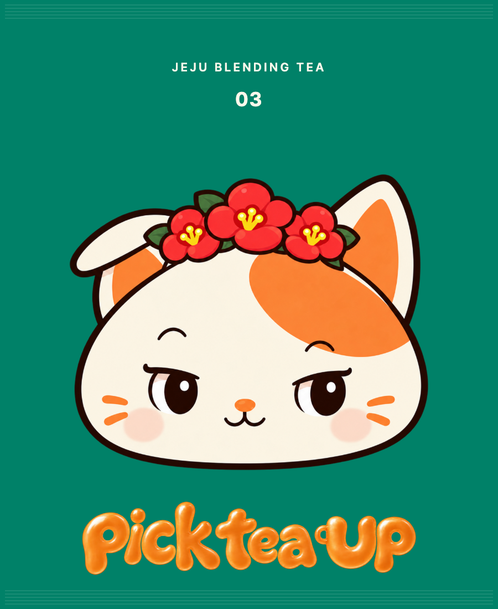
BLEND 03
티백 5개
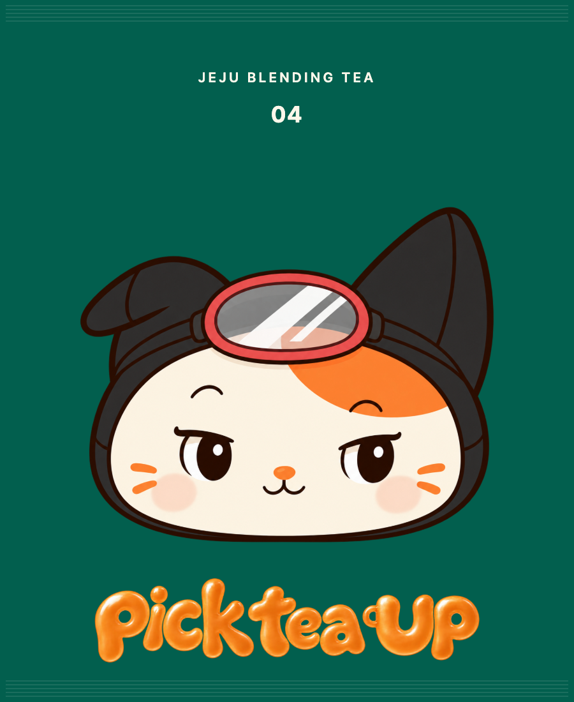
BLEND 04
티백 5개
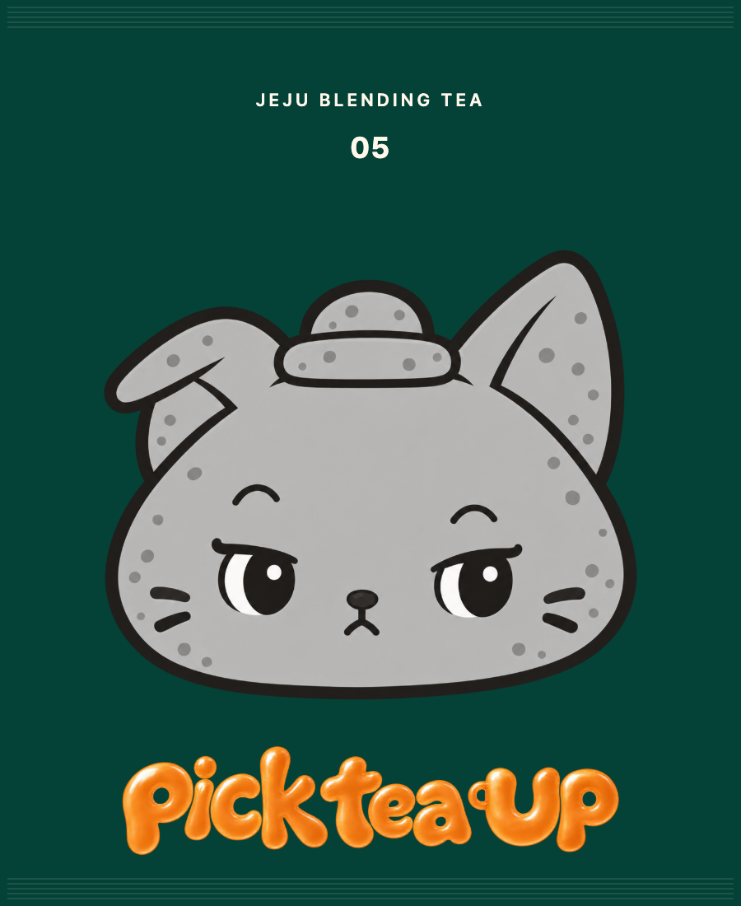
BLEND 05
티백 5개
가볍고 향긋한 한 잔부터, 구수하고 깊은 한 잔까지.
각 블렌드가 5개씩 담겨 있어 다시 마시며 비교할 수 있어요.
PICK BY YOUR TASTE
BLEND 01 · 한라봉
감귤 녹차
싱그러운 귤향으로 시작해, 녹차의 산뜻함으로 마무리.
제주 녹차 · 한라봉 · 감귤피
이런 취향이라면
과일향이 있는 가벼운 차가 좋아요.
BLEND 02 · 한라산
보리 녹차
맑은 녹차에 보리의 고소함을 살짝 더한, 담백한 한 잔.
제주 녹차 · 볶은 보리
이런 취향이라면
향이 과하지 않은 담백한 차가 좋아요.
BLEND 03 · 동백
사과 꽃향 홍차
사과의 달큰한 향 위로, 은은한 꽃향이 머무는 홍차.
제주 홍차 · 사과 · 식용 장미
이런 취향이라면
꽃향은 좋아하지만 너무 진한 향은 부담스러워요.
BLEND 04 · 해녀
당근 곡물차
보리와 메밀의 구수함에, 당근을 살짝 보탠 편안한 맛.
볶은 보리 · 볶은 메밀 · 구좌 당근
이런 취향이라면
평소 보리차처럼 구수한 맛을 좋아해요.
BLEND 05 · 돌하르방
구수한 감귤 홍차
홍차의 깊은 맛에 고소함과 약간의 귤향이 겹쳐지는 한 잔.
제주 홍차 · 볶은 보리 · 감귤피
이런 취향이라면
향만 가벼운 차보다 차다운 깊은 맛이 좋아요.
A STORY TO SIP WITH
좋아하는 것은 많지만 차의 맛은 아직 모르는 핑티.
오름으로 소풍을 가던 길, 작은 찻집을 만나면서
자기 취향에 한 걸음 가까워집니다.
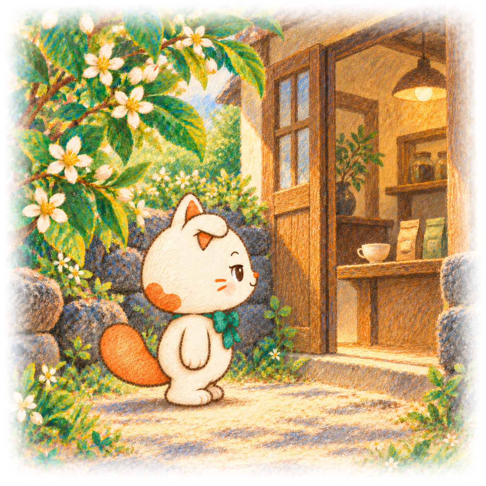
귤꽃 냄새, 구좌 당근, 바다와 오름.
익숙한 제주에서 이야기가 시작됩니다.
이름은 들어봤지만 맛은 모르는 차들.
핑티에게도 낯선 시작이 있어요.
좋아하는 것을 말해보는 작은 용기.
이야기 다음 페이지는 내가 채워갑니다.
MY TEA DIARY · 30 RECORDS
잘 그리지 않아도, 길게 쓰지 않아도 괜찮아요.
그림 한 칸, 찻잔 점수, 느껴진 맛과 짧은 한 줄이면 충분해요.
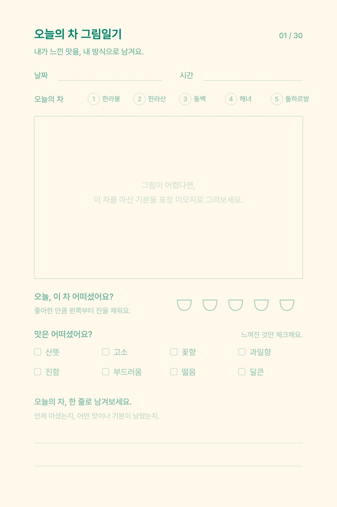
그림이 어렵다면, 차를 마신 기분을
표정 하나로 남겨도 좋아요.
좋아한 만큼 찻잔을 채우고,
산뜻함·꽃향·고소함 등을 체크해요.
언제 마셨는지, 무엇이 좋았는지.
다시 떠올리고 싶은 한 줄을 남겨요.
티백은 25개, 그림일기는 30회 기록용입니다.
남은 기록 페이지에는 가지고 있는 다른 차의 경험도 이어서 남길 수 있어요.
A MAP OF YOUR TASTE
기록한 맛을 마지막 취향 지도에 옮겨보세요.
자주 고른 맛이 조금씩, 나만의 모양이 됩니다.
그 맛을 체크한 기록 하나에 한 칸.
여덟 가지 맛마다 30칸을 채우며
다시 마시고 싶은 차를 찾아보세요.
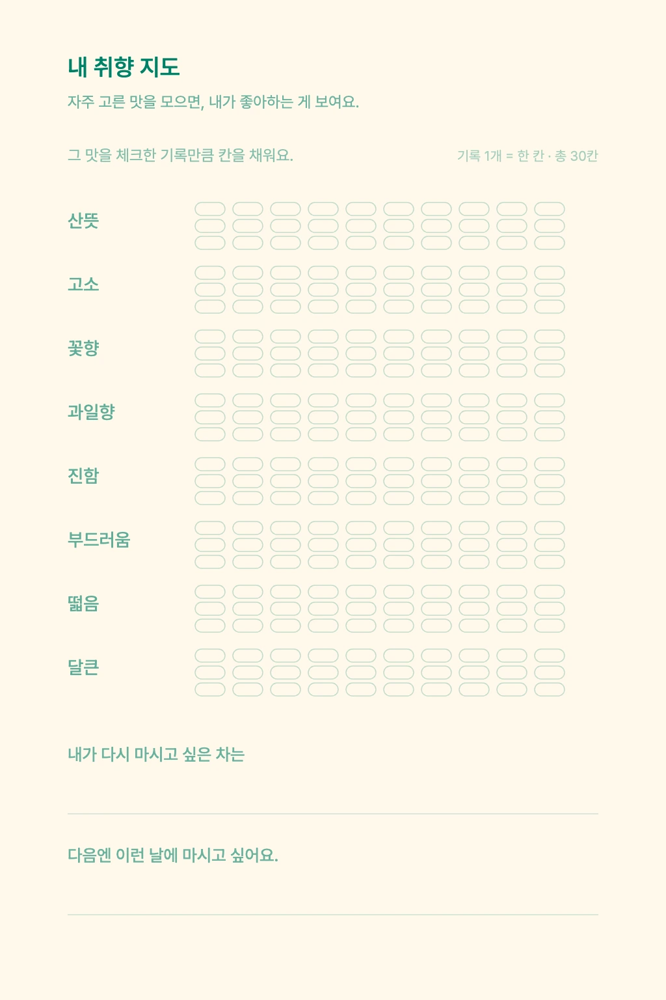
A LITTLE GIFT, A LONGER STORY
찻잔 사이로 얼굴을 내민 핑티, 초록빛 봉투,
천천히 채워갈 작은 기록책.
나를 위한 첫 차 세트로도, 마음을 전하는 선물로도.
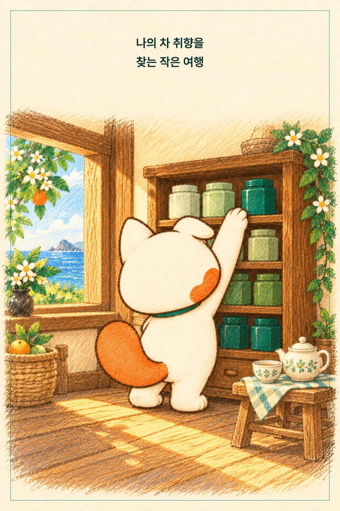
WHAT'S IN THE BOOK
| 제품 | 픽티북 시그니처 · 블렌딩 티백 세트 |
|---|---|
| 블렌딩 티백 | 5종 × 각 5개 · 총 25개 |
| 봉투 모티프 | 01 한라봉 · 02 한라산 · 03 동백 04 해녀 · 05 돌하르방 |
| 찻장북 | 1권 · 아래 콘텐츠를 함께 담은 책 |
| 핑티의 제주 동화 | 이야기 5장 |
| 차 그림일기 | 30회 기록용 |
| 내 취향 지도 | 8가지 맛 · 항목마다 30칸 |
네. 전문적인 표현을 찾기보다 내가 느낀 맛과 기분을 기록하도록 구성했습니다. 그림 대신 표정을 그리거나, 짧은 한 줄부터 시작해보세요.
티백은 5종이 각각 5개씩, 총 25개입니다. 그림일기는 30회 기록용이며 티백 수와는 다릅니다. 날짜를 정해 매일 쓰거나, 차를 마신 날에만 기록해도 좋아요.
제주의 풍경과 그때의 기분을 맛의 방향에 연결했습니다. 한라봉은 밝은 감귤향, 한라산은 맑은 녹차, 동백은 은은한 꽃향, 해녀는 구수한 곡물, 돌하르방은 깊은 홍차를 표현합니다.
가볍고 향긋한 차를 찾는다면 01 한라봉부터, 담백한 녹차를 좋아한다면 02 한라산부터 시작해보세요. 꽃향은 03 동백, 구수한 곡물은 04 해녀, 깊은 홍차는 05 돌하르방을 골라보세요.